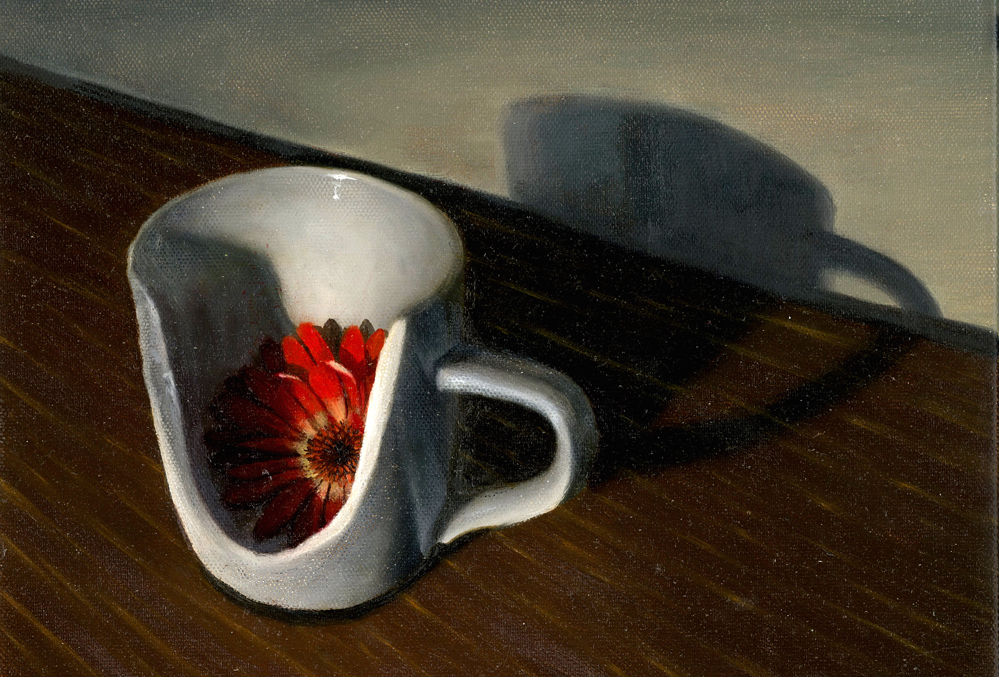
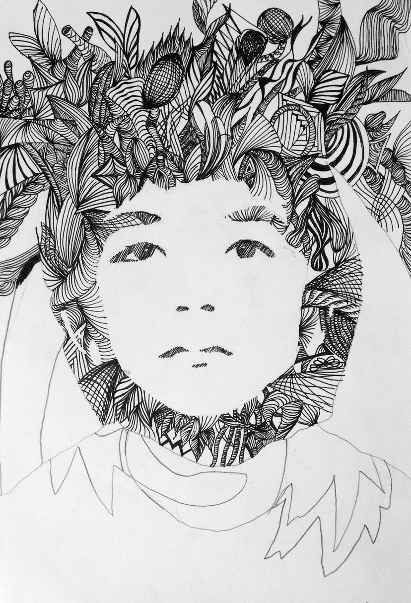
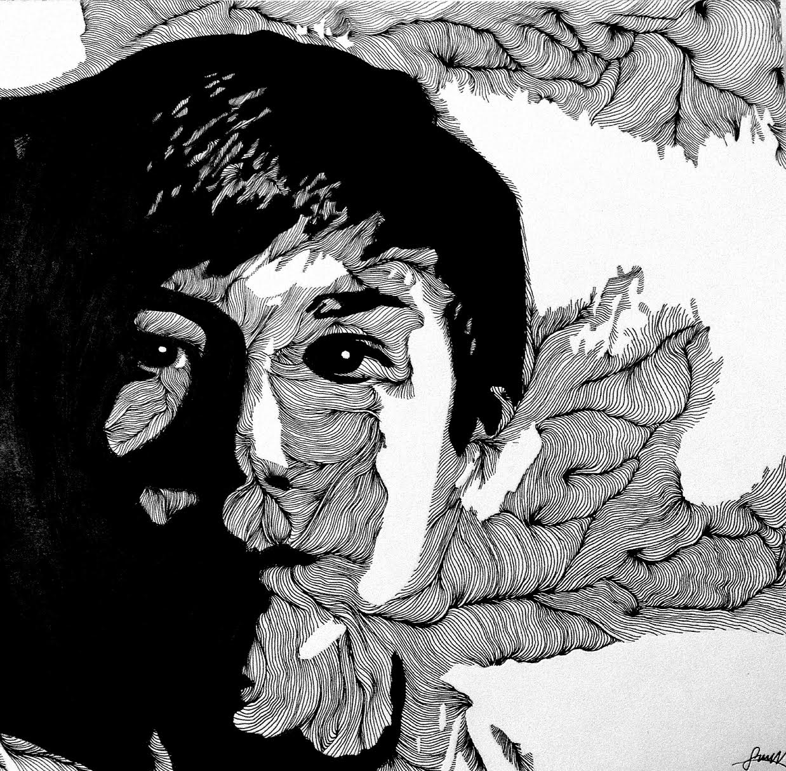
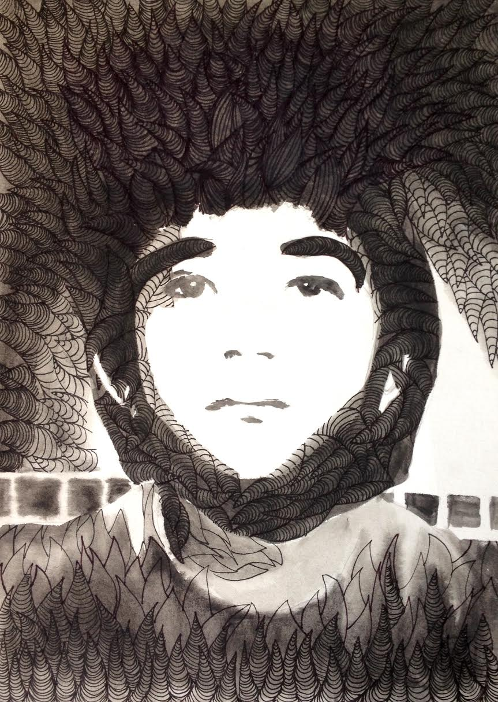

ZeniadaFall 2016
Hillside
She makes art, makes skylines, wills them to drop and tumble
and to scale and rise, all with the cautious flick of the wrist.
She makes the Charm City circulate, revolving through
black tar arterials, and the rows of harbor boats glide across the
placid, adulterated water, to and fro, in place of the waves.
And I, made aware of this human condition, saw
Men wearing homeopathic machine gun rounds
around their necks, like back in Normandy and Nam’
Wearing wooden crosses across their chests
or gold plated starry nights on alloy chains
and wearing themselves out, travelling hours for the sole sake
of the view from the city’s all natural peak, from Federal Hill,
Out from its underbelly, the faded pastel colors and shades
of the brick face seen from the stoops and alley streets and
Here was where I wanted to watch my brain matter be scattered
over the asphalt, as Bavarian flower girls marked their territory
with tender flicks of their wrists, leaving serene
Flutters of pink gray petals, that carried in the wind
Gas and steam, vapors hallucinate, ready to escape from this
Earth and into the atmosphere, beyond—beyond.
She makes the city oscillate at her feet, and as well, me,
and I acutely understood every feeling that overloaded my
Sunbaked brain, over and over, were words like
god help me, punish me no longer, let me live,
Until I lost the orientation of the rage in my soles and
I had visions of my feminine hands and fingers and
Drunken self and wished for nothing more than to
Become colorless and rigid and to love this frustration
and never again wonder why.
Alan Fang is a freshman Writing Seminars major from Westfield, New Jersey who enjoys the Beat Generation, strawberries, existential philosophy, and bubble tea, among other things.
Next | Table of Contentsonscreen.
This is a poem for Peaky Blinders-era Cillian Murphy, the enigmatic,
sooty, violent, and soft-hearted man of my dreams-
he puts on his shirt and then his waistcoat and then his vest and then
another waistcoat and he smokes cigarettes and loves women.
Like really loves them
like they did in the old days but then I remember that
Peaky Blinders-era Cillian Murphy’s hair is soft and brown
under his pageboy hat and that
he only uses Chinese girls for their sham red-powder mysticism and
sometimes I forget that everything about me is sharp and pointed and
I forget myself and I forget to make my voice soft and round so that they know
that I can be like them, too.
I look down at my hands to make sure they look like they could hold
a gun in post-Great War Birmingham and to make sure they look
like Cillian Murphy’s could (realistically) help them hold it.
Sometimes I wonder how it’s possible for me to feel this way and for them
to think that I don’t feel this way and to think
I don’t feel this way because my black hair and my spacious eyelids
are things that make people not feel things.
Cillian Murphy has spaces between the blue part of his eye
and the top part
spaces that are there
all the time and
he doesn’t realize that girls like me dream of living in them; dream
of being more than
what we are; long to lie down on that beautiful robins-egg
icy electric slate gray
Midwestern midwinter
“ethereal...alluring to a camera” -Vogue Magazine
round as fuck blue ground and look up at a white sky
that goes on forever.
I know I will never be the red-powder explosion
in a beautiful gangster’s grey world-
and when I watch Peaky Blinders-era Cillian Murphy
punch somebody with a razor in slow-motion I feel like
seven-eighths of a person and I’m sure that if he were to love me I would feel
seven-eighths loved and if the writers had us hook up somehow I would be allowed
seven-eighths of good time
because it’s just different somehow.
The episode always ends and I always
see my reflection in the blank black and that’s
why I’m like what I’m like.
Does that make sense
to anyone else?
Allison Jiang is a freshman from Holmdel, New Jersey. She hopes to one day own a big dog, play with words for a living, and set the Guinness World Record for most television watched by a human person.
Previous | Next | Table of ContentsRed Cynosure

Angela Zhu is studying at Johns Hopkins, where she plans on majoring in Public Health and minoring in fine arts. Her favorite academic subjects are English and history, while her hobbies include drawing, painting, and more recently sculpting.
Previous | Next | Table of ContentsTrichotomy

Katherine Xiang was born and raised in Norcal, where she developed a penchant for doodling and a love for design. She also likes physics, fencing, and chillstep.
Previous | Next | Table of ContentsBecoming Unmade
The hands I have belong to my father,
and fathers before him who carved their lives
out of porcelain, fragile like the daughters
they forged into sons so they could survive.
So in my rough palms flow smooth lines, scratching
numbers into cracked bones, words on dry skin–
sensations to hide behind while searching
for the perfect path to comfortable content.
But my nails I chipped in attempt to change
with the rush of time and against the tide,
doctrine internalized, breeding disdain.
Smooth lines turn rigid as past and me collide.
These hands of mine are scarred beyond repair,
But they are mine alone, not to be shared.
Previous | Next | Table of Contents
From Mt. Rigi

Calvin Qian is an amateur, self-taught photographer who has been taking photos for just over a year. He relishes in the journey behind his photos as much as the photos themselves, always searching for that next hike or road trip. Currently focusing on photojournalism, he hopes to take impactful photos that raise questions, change perspectives, and provoke thought.
Previous | Next | Table of ContentsBarren

Calvin Qian is an amateur, self-taught photographer who has been taking photos for just over a year. He relishes in the journey behind his photos as much as the photos themselves, always searching for that next hike or road trip. Currently focusing on photojournalism, he hopes to take impactful photos that raise questions, change perspectives, and provoke thought.
Previous | Next | Table of Contentsfor the excavator operator who fled the market st. building collapse
Back to the train-ride, the curled-up passengers
that take two seats at a time to sleep off the meaning
of short goodbyes, to dream them better than they
were: regret looks like a blocking sled
from the window-seat. Guardrails smooth into one
another and the track-signs bend back like parents
in tall hugs. Real regret comes in the rubrics
about train accidents that happened far away
but close enough that lurch: it could’ve been him,
it could’ve been her. If you’re a Lonesome Fugitive,
it could’ve been me. I’ve heard when you sleep you’re more
likely to survive a crash. In the Bohea collision,
you don’t tense up, your muscles temper to chimney
bricks: when they’re mid-air, free-falling to the cobbled snow.
From the tracks, factory-lights scrim the power stations:
tangles unknot in the insect-legs of transmission towers,
and feign indigenous. Quiet Car, I’ve seen enough––
from their cliffs, above country mountain valley mouths,
towers remind you that you’re not lost: through the branches
all you have are power-lines that lead to them––
polluted vista rot behind catchpenny businessmen
minding the gap. Even at night, white
hardhats can be seen lining the silo rims:
try winning the lottery, and know cancer.
From the window-side, Point-No-Point:
Rohm and Haas hired teenagers that grew up to be caterers
driving drunk through the Thanksgiving Day Parade,
saying: this isn’t how it used to be.
Point-No-Point is Imaginary Country:
no wider than a ploughshare, and as strait as an arrow,
it appears to be a point, and then you close
in on it, and it becomes an ordinary cape,
and then again, rowing closer to it,
it’s gone. I’ve felt my misgivings in train vestibules,
important failures––and the farmer continued to plow––
others played a role and have yet to be held.
Maxwell Gontarek is an undergraduate Writing Seminars major at Johns Hopkins University. He plays in the bands Jose F$ckhead, Beast Install, and D.S. Burner.
Previous | Next | Table of ContentsUntitled

William Stanton is a Writing Seminars major and a Computer Science minor at Johns Hopkins. He enjoys drawing in his spare time and usually focuses on working with ink and watercolor.
Previous | Next | Table of ContentsJoyeuse
I made a list of all the things that you love and I tentatively decided to place myself at the very end
because I’m a narcissist, too much in my own mind
Storm clouds roll in, yet the sun perches itself upon my shoulder and tells me lies about the imminent
summer and about the ghost that I am and about Manhattan ready to burst under the weight of
its homeless hearts
Storm clouds roll in, still the sun caresses the back of my neck, feels out the crevices, every vertebra
and draws figure eights I’ll never see
The wind rises and the shower head, O Mother have mercy for I who arose from your earthen soil roots
my atoms are your own my bones my flesh all yours they are
I want to be celestial– angelic like all the lesbians every weekend, puffing on marijuana fags to feel that
dull dull electric
I want Heaven to wander down, stroke my cheek, read me Naked Lunch all in a dulcet monotone I
dream to be as undisciplined, to live those vignettes the way they play out in my mind
Forget adolescence and chastity and propriety and your good holy nature, god let me live, Mother let
me forget the tempest that stalks in my wake
Remember youth among the American elm and the spastic joy and Samuel’s cradle and all of the
hormones and purgatoried nights that built up to this very moment
Remember me going to war for you clutching a lodestone and a gun barrel in each of my pink baby soft
palms, trudging to the asphalt trenches to carve out new scars on my knees
Nights I spent discussing realpolitik with chapped lips and labias and twelve angry jurors and whatever
commie delusion spell I swear I was under
Mornings wherein my eyes melted out of their sockets over washed out printer paper photographs of
the hudson river and mister rogers and balding jewesses
Mornings that devolved into ballroom dancing wearing nothing but my own holy good nature muttering
disembodied sacraments and manuscripts
The stuffs of legend and floodlights and art household movie dealings and cannon bard epics and
tokyo tower of babel & all at once
Please forgive that which exists among the red threaded morbid sex-crazed dramatics that
live only in swamp new jersey theater companies
But more than anything to understand the human heart, that which could be attained sequestered behind
chinese immigrant registers, the knowledge of aging & peeling oriental wallpapers, the secrets of
fortune cookie vats, the mass produced cellophane & sugar wafers, the wisdom of black marbled
tabletops who unwittingly eavesdropped on the hushed confessionals dancing over steam noodle
soup
Chinatown nook cranny and crack and jazz and math, the hints of universe and god and prophet and
side-a-ways glances and the modern era erotics
Of colossal brown grim dark irises and bedroom innocence wraths and arteries of all sorts, faux
mescaline manias and impulsive grunts wasting brain matter and cash
And above all the disappointment, the only explanation for your limp dick diathesis and yellow fever and
mallon-esque facial structures
And above all that pre-bolshevik showroom mantelpiece magnum that emancipates me through all of my
flesh and muscle and tissue disintegrations and ram rods as fine may eleventh mists and dust never to return
Alan Fang is a freshman Writing Seminars major from Westfield, New Jersey who enjoys the Beat Generation, strawberries, existential philosophy, and bubble tea, among other things.
Previous | Next | Table of ContentsPrince of Convenience
His contentment, his despair, he curates,
etching tattoos of circles and shut doors–
sketches that symbolize only self-rape,
an artist that likes to tear his skin sore.
His world at his disposal, he wants more
adderall, more lift and fall,
he wants all
the blurred nights and crowds,
the dark sounds that pour like mother’s milk,
like mother’s grounding drawl.
Crashing cars, high on coke
that makes him crawl
up the front lawn
and still feel infinite.
Hannah Thorpe is studying Writing Seminars and Philosophy at Johns Hopkins University. She is from Topanga, CA.
Previous | Next | Table of ContentsExperiments with light and shadow



Grace Windheim is a freshman at Johns Hopkins University. She loves creating art of all kinds and considers the outdoors to be home. She lives by the motto "life is crazy."
Previous | Next | Table of Contentsmagic.
Allison Jiang is scared most of the time but has learned
how to squeeze that fear into a ball and make it bounce; she has learned how to stand so that her hair curls right and cry so that plants grow right and live so that she is scared but is still ok.
Allison Jiang has accepted that things may never be good, but after some time in front of the bathroom mirror,
they might be enticed into being ok.
Allison Jiang is a movie with a cheesy message,
a spoon when you need a fork,
a force of black-haired-girl magic and driving slowly that is ready
to finally be known.
Black-haired-girl magic is what I discovered far too late
for any of that mess in junior year;
black-haired girls you see they’re smooth. Smooth in the way that we were built to love,
smooth in the way that takes you back to a time when the moon was a lot bigger
than it is now.
I used to want to hide my face inside so that no one would be able to tell
that I loved it, loved everything about my almond joy-eyes because I didn’t want them to see me
thinking that this was beautiful.
I was afraid that if they looked me in the eye they would find the secret stash of confidence of beauty that I hid between my pupil and my iris,
that they would find it and think
it was funny; but now I show it to them before they can laugh
and I wear the irony of my eyes
like a pair of comfy shoes, and I feel
that black-haired-girl magic flow behind me like an ink trail, like my hair and I feel
bits of the stars from way way down in my blood and I feel
like I’m sitting on a mountain high high above the clouds where I can see
that we can be loved after all.
Allison Jiang is a freshman from Holmdel, New Jersey. She hopes to one day own a big dog, play with words for a living, and set the Guinness World Record for most television watched by a human person.
Previous | Table of Contents